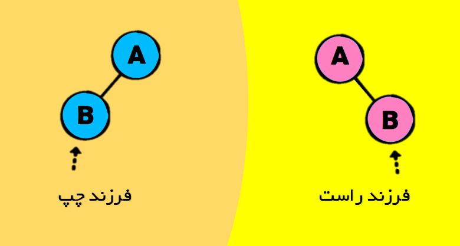
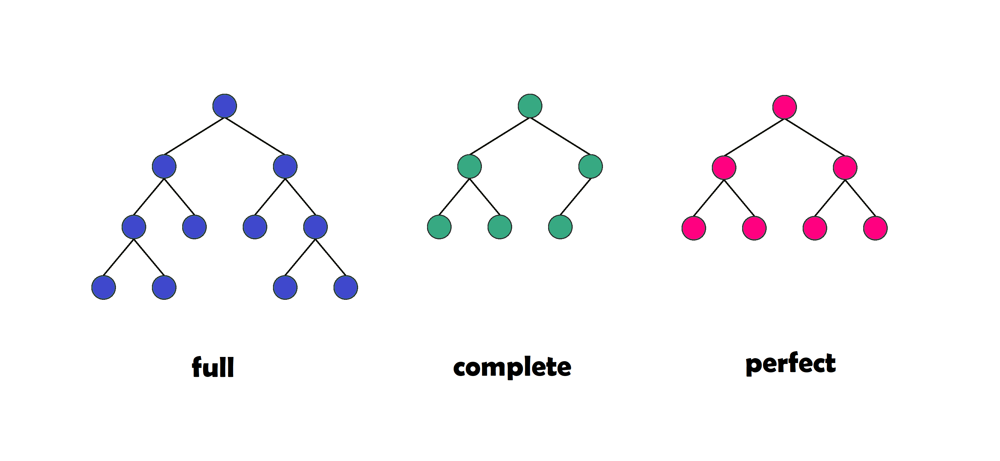
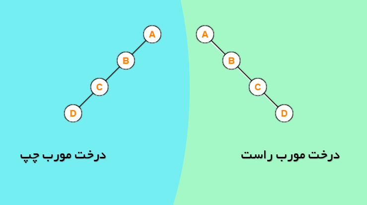
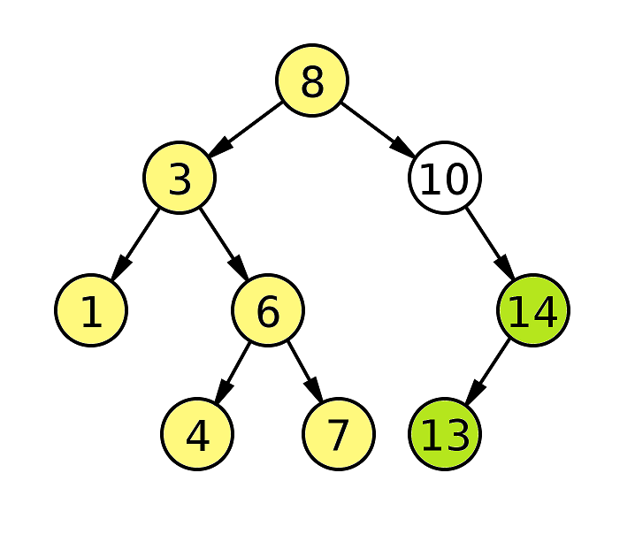

درخت جستجوی دودویی¶
درخت دودویی¶
درخت دودویی نوع خاصی از درخت ریشهدار است که در آن هر نود یا دارای هیچ، یا یک و یا دو فرزند میباشد. علاوه بر این، در این نوع درختها فرزند راست با فرزند چپ تفاوت دارد. برای مثال در شکل زیر هر دو درخت باینری هستند ولی درخت آبی رنگ با درخت صورتی رنگ یکسان نیست.

قبل از شروع لازم است با انواع مختلف درختهای دودویی آشنا شویم. درخت دودویی پر درختی دودویی است که همگی گرههای داخلی آن یا دو فرزند دارند و یا فرزندی ندارند.در شکل زیر درخت بنفش رنگ درخت پر است. درخت دودویی کامل درختی دودویی که در سطح آخر گرهها از چپ به راست پر شدهاند. در شکل زیر درخت سبز رنگ درخت پر است. درخت دودویی درست درختی کامل و پر است که همگی گرههای داخلی آن دو فرزند دارند. در شکل زیر درخت صورتی رنگ درخت درست است.

درخت دودویی مورب درختی دودویی است که در آن همگی فرزندان یا فرزند راست هستند و یا چپ.در شکل زیر دو درخت مورب راست و مورب چپ نشان داده شده است.

درخت جستوجوی دودویی¶
به درخت دودویی که دو شرط زیر را داشته باشد درخت جستوجوی دودویی است. شرط اوّل این است که هر گره در آن بیانگر یک کلید متمایز باشد و شرط دوّم این است که کلید هر گره از کلید همهی زیر گرههای چپش بزرگتر و از همهی زیر گرههای راستش بزرگتر باشد. شکل زیر یک درخت جست و جوی دودویی است که دو شرط گفته شده را داراست. برای مثال کلید گره ۱۰ از همهی گرههای زرد رنگ که در سمت چپش قرار دارند بزرگتر و از همهی گرههای سبز رنگ که در سمت راستش قرار دارند کوچکتر است.

مهم
با پیمایش پیشترتیب درخت جستوجوی دودویی میتوان کلیدها را به صورت صعودی مرتب نمود
عملیانی که روی این دسته از درختها انجام میشود میتواند جستوجو برای یک کلید خاص، پیدا کردن کمترین و بیشترین کلید، پیدا کردن عنصر بعد و قبل، درج , حذف باشد.
جستوجوی یک کلید خاص در درخت جستوجوی دودویی¶
برای جست و جوی کلید x ابتدا x با ریشه مقایسه میشود. اگر بزرگتر از ریشه باشد باید جستوجو را در زیر درخت راست ادامه داد و اگر کوچکتر از ریشه باشد این جستوجو باید در سمت چپ انجام شود. برای مثال برای پیدا کردن گره شماره ۶ در شکل قبلی، ابتدا ۶ با ۸ که ریشه اسنت مقایسه میشود و چون ۶ کوچکتر از ۸ است سراغ زیردرخت سمت چپ میرویم. این بار عنصر ۶ با ۳ مقایسه میشود و چون ۶ از ۳ بزرگتر است به سراغ زیر درخت سمت راست میرویم. ۶ با ۶ مقایسه میشود و به جواب میرسیم.
بزرگترین و کوچکترین مقدار در درخت جستوجوی دودویی¶
برای پیداکردن بزرگترین مقدار باید از ریشه شروع کنیم و جستوجو را در زیر درختهای سمت راست ادامه دهیم و سراغ فرزندان سمت راست برویم تا به گرهای برسیم که فرزند راست ندارد. برای پیداکردن کوچکترین مقدار باید از ریشه شروع کنیم و جستوجو را در زیر درختهای سمت چپ ادامه دهیم و سراغ فرزندان سمت چپ برویم تا به گرهای برسیم که فرزند چپ ندارد. برای مثال در شکل قبلی، بزرگترین گره گرهای است که در راستترین موقعیت قرار گرفته و ۱۴ است. کوچکترین گره نیز در چپترین موقعیت قرار گرفته و ۱ است.
عنصر بعد و قبل در درخت جستوجوی دودویی¶
برای پیدا کردن عنصر بعدی عنصر x سه حالت وجود دارد: اگر x دارای فرزند راست باشد، کوچکترین عنصر در زیر درخت راستش عنصر بعدی است. اگر x فرزند راست نداشته باشد، اولین عنصر در بین اجداد عنصر x که در سمت راست قرار دارد عنصر بعدی است.
برای پیدا کردن عنصر قبلی عنصر x دو حالت وجود دارد: اگر x دارای فرزند چپ باشد، کوچکترین عنصر در زیر درخت چپش عنصر بعدی است. اگر x فرزند چپ نداشته باشد، اولین عنصر در بین اجداد عنصر x که در سمت چپ x قرار دارد عنصر بعدی است.
درج در درخت جستوجوی دودویی¶
برای درج عنصر باید ابتدا آن را جستو جو کنیم و اگر در جستوجو کلیدی با عنصر در درخت وجود نداشت گره را درج میکنیم. گره به عنوان فرزند آخرین گرهای که مورد جستوجو قرار گرفته است درج میشود. اگر x بزرگتر از گره باشد در سمت راست و در غیر این صورت در سمت چپ قرار میگیرد.
حذف از درخت جستوجوی دودویی¶
برای حذف عنصر x سه حالت وجود دارد: اگر گره x فرزندی نداشته باشد از درخت حذف میشود. اگر گره x تنها یک فرزند داشته باشد از درخت حذف شده و فرزندش به جای آن قرار میگیرد. اگر گره x دو فرزند داشته باشد باید درخت پیمایش شده و عنصر بعدی و یا قبلی به جای آن قرار گیرد.